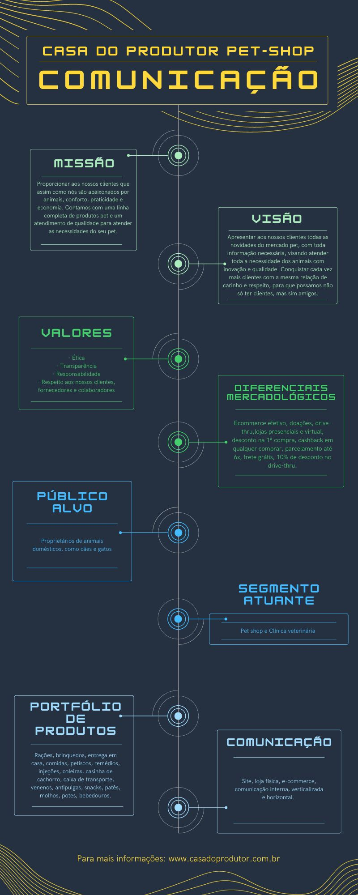
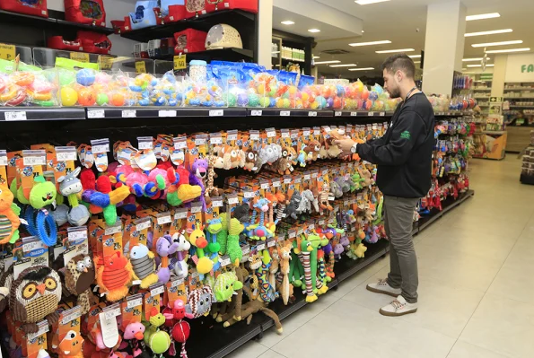

Esse é o Blog Coorporativo do Pet - Shop Casa do Produtor!
Nossa História
Fundada por Adriano Melo em 1995 o Pet Shop – Casa do Produtor, começou como uma
portinha no meio de
uma quadra na Rua Engenheiro Rebouças no bairro Rebouças, Curitiba-PR, contava apenas com o próprio
senhor Adriano que atua até hoje na empresa e seus familiares, sendo que hoje em dia conta com mais
de 300 funcionários.
A empresa começou pequena, porém hoje já existem 3 lojas contando com a loja do
Rebouças que é muito
bem estruturada, com loja e grandes estoques, a segunda loja foi fundada no bairro Seminário, logo
após o Centro de Distribuição no bairro Rebouças e por último a inauguração da loja do bairro São
Braz em agosto de 2020.
Tendo ética, transparência, responsabilidade e respeito a todos como valores o
Pet
Shop – Casa do
Produtor tem como missão proporcionar aos clientes, que são apaixonados por animais, atendimento de
qualidade, conforto, praticidade e economia, visando assim atender cada vez mais clientes, com novos
produtos e inovações do mercado.
Portfólio
O público alvo do Pet Shop – Casa do Produtor são os proprietários de animais
domésticos, mas também proprietários de grandes animais, como cavalos, para esses clientes existe
toda uma gama de diferenciais mercadológicos como: e-commerce efetivo, doações, drive-thru, desconto
na 1ª compra, cashback em qualquer compra, parcelamento em até 6x, frete grátis e 10% de desconto em
compras pelo drive-thru.
A empresa possui inúmeros produtos e serviços para oferecer aos seus clientes:
clínica veterinária, eventos envolvendo o mundo animal, doações de cães e gatos, entrega a
domicílio, e-commerce. Em seu portfólio de produtos constam rações, bebedouros, alimentos, remédios,
coleiras, guias, potes, casinhas, sachês, roupas, brinquedos, venenos, biscoitos e molhos.
Comunicação Empresarial

O Pet Shop – Casa do Produtor apresenta comunicação com seu público alvo, ou seja,
público externo, extremamente eficaz. Site consistente que apresenta de forma eficaz todos os seus
produtos, serviços, anúncios, descontos, endereços, missão, visão e valores.
É na comunicação interna da empresa que existem os ruídos, ruídos estes que
apresentam características culturais, físicas e psicológicas. A empresa apresenta uma comunicação
vertical e horizontal extremamente ineficaz, apresentando diversos ruídos como dificuldade em
definir processos comunicacionais, utilização de cargos e proximidade parental com o dono para
validação de veracidade das informações e informações discordantes passadas por líderes de setores
diferentes, erro na percepção e identificação de ruídos, causando inúmeros problemas na execução de
atividades rotineiras e simples.
Notícia

Curitiba tem “Beto Carreiro World” para seus pets
Iniciando suas atividades há 23 anos em uma pequena porta na Rua
Engenheiro
Rebouças, em Curitiba. Pouco a pouco foi crescendo e cresceu de forma tão grande que a Casa do
Produtor
tornou-se o “Beto Carrero World” para seus pets, local onde encontra alimento, saúde e muita
diversão
para os mesmos.
Vanessa Melo, diretora comercial do projeto, informa que quem iniciou-o foi
seu
marido Adriano Melo. Nascido em Matelândia, interior do Paraná, mas que entre 13 a 14 anos, ainda
jovem
mudou-se para Curitiba.
“No momento em que começou a trabalhar com o tio, tendo contato com o meio
animal e então adquiriu a loja. Uma pequena porta no meio de uma quadra, que tinha como público alvo
donos de vacas e cavalos, devido a isso surgiu o nome da empresa Casa do Produtor”, informou
Vanessa.